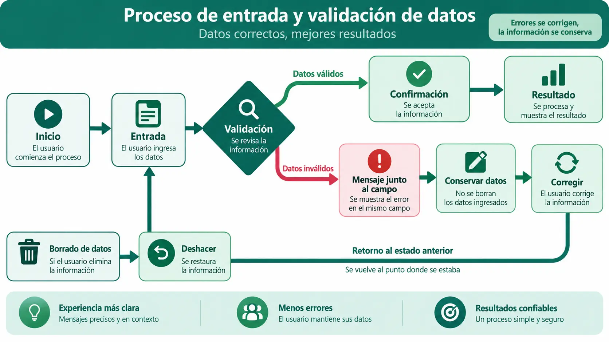

Contenido de la página
Objetivo docente
Diseñar recorridos comprensibles, prevenir errores y redactar mensajes claros, accionables y verificables.
Contenido para explicar
La secuencia de control describe estados y transiciones: inicio, entrada, validación, confirmación, resultado y recuperación. La interfaz debe mantener informado al usuario, impedir pérdidas evitables y ofrecer salida. Un mensaje útil dice qué ocurrió, dónde y qué puede hacerse.

Ejemplo básico resuelto
Mensaje inicial: «Error 17».
Revisión: «No se guardó la tarea porque falta el título. Escríbelo y vuelve a pulsar Guardar».
El segundo mensaje identifica resultado, causa y acción. Debe aparecer cerca del campo, asociarse programáticamente y conservar los datos ya escritos.
<input id="titulo" aria-describedby="error-titulo" aria-invalid="true">
<p id="error-titulo">Escribe un título para guardar la tarea.</p>RA4-PB07 · Flujo recuperable
Enunciado para publicar
Dibuja el flujo de alta y borrado. Reescribe seis mensajes, añade recuperación ante borrado y ejecuta cinco casos: correcto, vacío, dato inválido, cancelación y recuperación.
Solución orientativa
Mostrar ejemplo de solución
Estados mínimos: formulario vacío → edición → validación → guardado o error; tarea visible → borrado → aviso con «Deshacer» → restaurada o eliminación confirmada. Las pruebas registran entrada, acción, resultado esperado, resultado observado y evidencia.